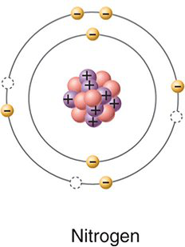
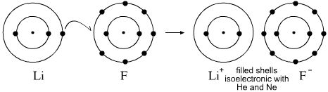
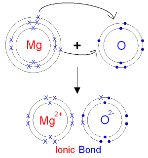
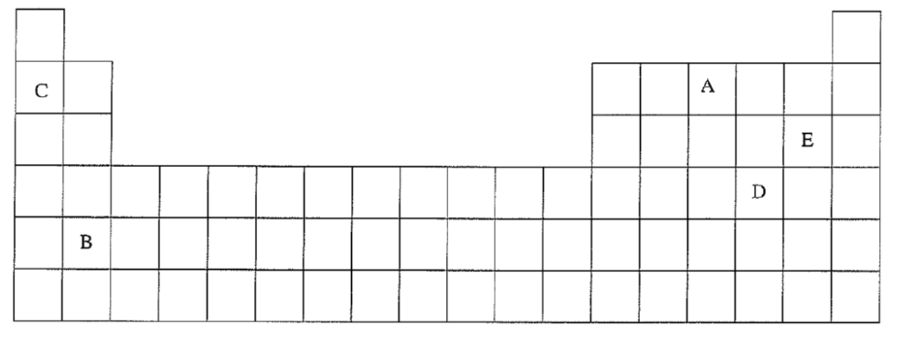

Revision questions on chemical patterns: atoms, ions, the periodic table, formulas and equations. Use a periodic table and valency table. Each part is worth 1 mark as a guide.
Multiple choice
A substance made up of two different types of atoms bonded together is a:
Valence electrons are:
The number of electrons in an atom of an element can be found using the:
Atoms that have lost or gained electrons are known as:
Which pair contains the same number of neutrons?
P: 31 − 15 = 16 neutrons; S: 32 − 16 = 16 neutrons.
An element in Group 2 of the periodic table has how many valence electrons?
Which group of elements forms 1− ions?
What is the formula of silver carbonate?
The products of a reaction between a (reactive) metal and water are:
What is the electronic configuration of phosphorus?
The mass number of an element is:
Which is the correct formula for a nitrate ion?
Particle X has 13 protons, 10 electrons and 14 neutrons; Y has 12 protons, 10 electrons and 13 neutrons; Z has 11 protons, 10 electrons and 12 neutrons. Which has formed a 2+ ion?
Y has two more protons than electrons, so its charge is 2+.
The balanced equation for the reaction between calcium and sulfuric acid is:
Properties of metallic elements include:
Short answer
Question 1
When magnesium is added to hydrochloric acid (HCl), hydrogen gas (H2) is produced and magnesium chloride (MgCl2) is left in solution.
Write a word equation for this reaction.
magnesium + hydrochloric acid → magnesium chloride + hydrogen
Write a balanced chemical equation for this reaction, including states.
Mg(s) + 2HCl(aq) → MgCl2(aq) + H2(g)
Question 2
Gold, iron and magnesium are elements which conduct electricity. Sulfur and phosphorus are elements which do not conduct electricity. When iron and sulfur are heated together, they react to form a new substance called iron sulfide.
From the substances named above, give (i) a metal: ; (ii) a compound: .
Name one other property that gold, iron and magnesium would have in common.
Any one: they conduct heat; they have high melting/boiling points; they are malleable; they are ductile; they are shiny (lustrous).
Give the electron shell arrangement of each element (as you would draw it in a shell diagram).
Lithium:
Silicon:
Neon:
Calcium:
Magnesium:
Boron:
Complete the table.
| Name | Symbol | Number of electrons | Electronic configuration |
|---|---|---|---|
| Be | |||
| oxide ion | |||
| potassium ion | |||
| magnesium | |||
| N3− | |||
| Al | |||
| chloride ion |
Type ion charges after the symbol, e.g. O2- or K+.
Write the formulae of the ions. (Type the charge after the symbol, e.g. Na+, SO4 2- as SO42-.)
Oxide ion: Nitride ion: Iron(III) ion:
Magnesium ion: Ammonium ion: Sulfate ion:
Potassium ion: Carbonate ion: Hydroxide ion:
Write formulae for these compounds.
Magnesium nitrate: Aluminium phosphate: Barium chloride:
Silver fluoride: Potassium hydroxide: Sodium sulfate:
Complete the table using the periodic table.
| Element | Atomic number | Mass number | Protons | Neutrons | Electrons |
|---|---|---|---|---|---|
| Copper | 29 | 35 | |||
| Tin | 69 | 50 | |||
| 53 | 127 | ||||
| Uranium | 238 | 92 | |||
| 79 | 197 | ||||
| Lithium | 7 | 3 |
Write balanced chemical equations, including states, for: (a) hydrochloric acid reacting with aluminium to produce aluminium chloride and hydrogen gas; (b) zinc metal placed in copper(II) sulfate solution, producing zinc sulfate and copper metal.
(a) 6HCl(aq) + 2Al(s) → 2AlCl3(aq) + 3H2(g)
(b) Zn(s) + CuSO4(aq) → ZnSO4(aq) + Cu(s)
On paper, draw the atomic structure of a nitrogen atom, labelling the location and correct number of protons, neutrons and electrons, and the nucleus and electron shells. Describe it, then compare.
A nucleus containing 7 protons and 7 neutrons, surrounded by two electron shells: 2 electrons in the first shell and 5 in the second (7 electrons in total).

Use the periodic table to give the charge of each ion.
- Beryllium: b. Potassium: c. Fluoride: d. Sulfide: e. Gallium:
Use electron shell diagrams (on paper) to show the bonding in (a) lithium fluoride and (b) magnesium oxide. Describe them, then compare.
(a) Lithium (2, 1) transfers its one outer electron to fluorine (2, 7), forming Li+ (2) and F− (2, 8); both now have filled shells.
(b) Magnesium (2, 8, 2) transfers two electrons to oxygen (2, 6), forming Mg2+ (2, 8) and O2− (2, 8). The oppositely charged ions attract: an ionic bond.


Give the formulas of these polyatomic ions.
Hydroxide: Phosphate: Nitrate: Carbonate: Sulfate:
Give the formula of the ionic compound formed between:
- element X in group 2 and element Y in group 16:
- element X in group 1 and element Y in group 15:
- element X in group 13 and element Y in group 17:
Give the formula or name of each compound.
| Name | Formula |
|---|---|
| Chromium(III) oxide | |
| Magnesium carbonate | |
| KNO3 | |
| HgCl2 | |
| Aluminium hydroxide | |
| Li3PO4 | |
| Sodium hydrogen carbonate | |
| Calcium fluoride | |
| Barium nitride | |
| Iron(II) sulfate |
Balance the equations (write 1 where no number is needed).
- H2SO4 + NH4OH → (NH4)2SO4 + H2O
- HNO3 + MgO → Mg(NO3)2 + H2O
- HCl + CaCO3 → CaCl2 + H2O + CO2
- HCl + Zn → ZnCl2 + H2
- C5H12 + O2 → CO2 + H2O

Give the charge of the ion each labelled element forms.
A: B: C: D: E: